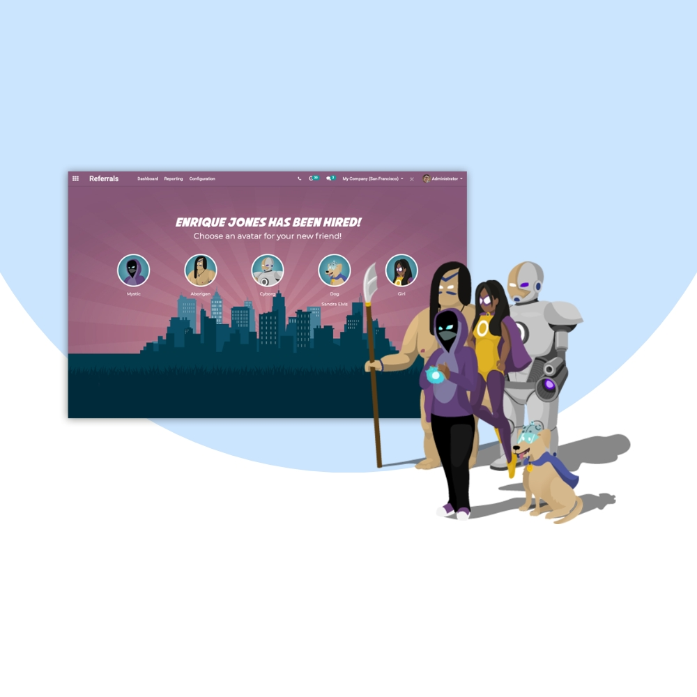
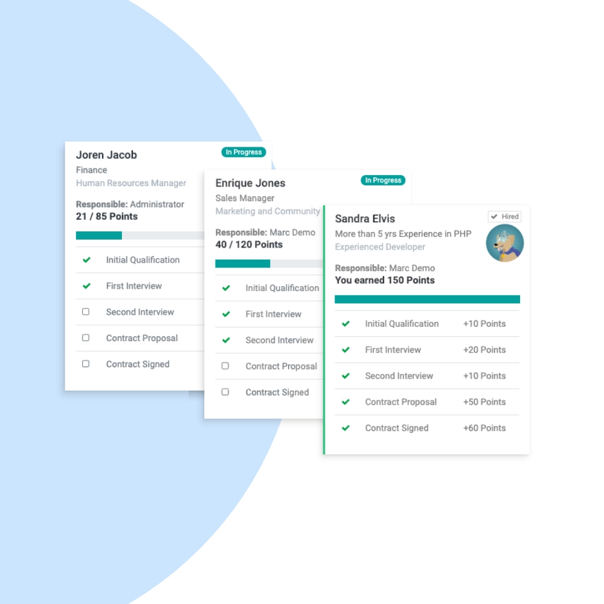
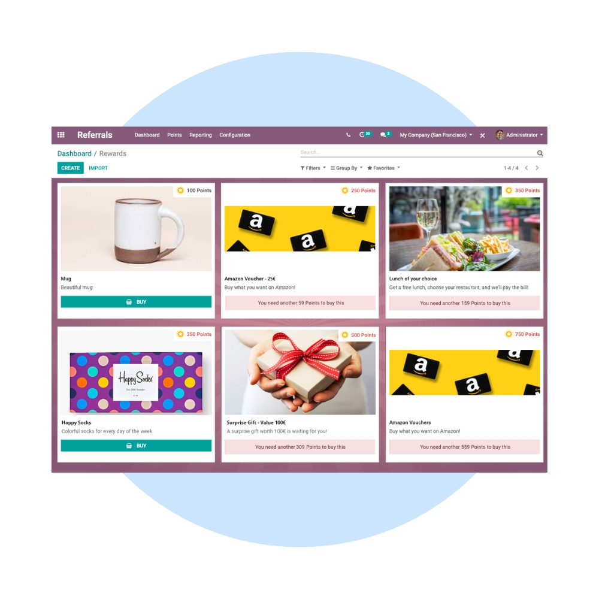

Accelerate hiring through employee referrals with Odoo Referrals. We help organizations create engaging referral programs, reward employees, and source high-quality candidates faster through internal networks.
We configure Odoo Referrals to match your hiring goals, reward policies, and company culture. Integrate referrals seamlessly with Recruitment, Employees, Email, and Gamification features.


Our implementation ensures a fun, transparent, and effective referral process that boosts employee participation and reduces hiring costs.
Leverage your team’s network for quality hires.
Boost participation with points and leaderboards.
Incentivize employees with configurable rewards.
Reduce time-to-hire with trusted referrals.
Track referral status from submission to hire.
Seamlessly connected with Recruitment & Employees.
We help you continuously optimize referral programs, increase participation, and maximize hiring ROI through data-driven improvements.
